פשוט להצליח במתמטיקה › כל הנושאים › פונקציות מעריכיות ו-ln
פונקציות מעריכיות ו-ln – סרטוני הסבר ותרגול
75 סרטוני הסבר ותרגול בנושא פונקציות מעריכיות ו-ln – לשאלון 472, שאלון 572. כל נושא מוסבר מהקל אל הקשה: קודם הרעיון, אחר כך תרגילים, ובסוף שאלות בסגנון בגרות. הכול בחינם, בשיטת "פשוט להצליח".
רוצים לעקוב אחרי ההתקדמות?נרשמים בחינם, וכל סרטון שראיתם מסומן ✓. ממשיכים מכל מכשיר.
הצטרפות בחינם ←פונקציות מעריכיות ו-ln – שאלון 472 כל הנושאים של שאלון 472 ←
 אינטגרל של פונקציה מעריכית – מציאת f ושטח
אינטגרל של פונקציה מעריכית – מציאת f ושטח אינטגרל של eˣ – פונקציה קדומה של e בחזקת ביטוי
אינטגרל של eˣ – פונקציה קדומה של e בחזקת ביטוי פונקציית ln – תחום הגדרה, משוואות וחוקי לוגריתמים
פונקציית ln – תחום הגדרה, משוואות וחוקי לוגריתמים f(x)=eˣ ו-g(x)=e⁻²ˣ⁺³ – נקודת חיתוך, משיק ושטח
f(x)=eˣ ו-g(x)=e⁻²ˣ⁺³ – נקודת חיתוך, משיק ושטח חקירת הפונקציה f(x)=x³·eˣ
חקירת הפונקציה f(x)=x³·eˣ משוואות עם eˣ – גורם משותף והצבה
משוואות עם eˣ – גורם משותף והצבה משוואות עם eˣ – הצבה t=eˣ ומשוואה ריבועית
משוואות עם eˣ – הצבה t=eˣ ומשוואה ריבועית משוואות מעריכיות עם לוגריתם – log כשאין בסיס משותףחקירת fx=ax∕ln x−a עם פרמטר + g=1∕f
משוואות מעריכיות עם לוגריתם – log כשאין בסיס משותףחקירת fx=ax∕ln x−a עם פרמטר + g=1∕f חקירת fx=x+lnx²−8 – תחום, אסימפטוטות וקיצון
חקירת fx=x+lnx²−8 – תחום, אסימפטוטות וקיצון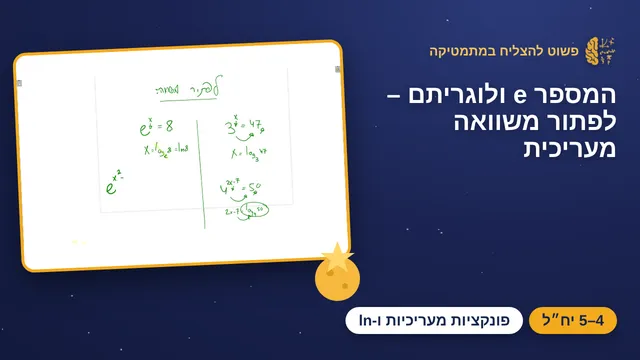
המספר e ולוגריתם – לפתור משוואה מעריכית גזירת eˣ – פונקציה מורכבת ומכפלה
גזירת eˣ – פונקציה מורכבת ומכפלה משוואות מעריכיות – הוצאת גורם משותף והצבה t=3ˣמשוואות מעריכיות – השוואת בסיסים
משוואות מעריכיות – הוצאת גורם משותף והצבה t=3ˣמשוואות מעריכיות – השוואת בסיסים משוואות מעריכיות – בסיס שבר
משוואות מעריכיות – בסיס שבר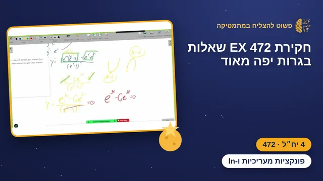
חקירת EX 472 שאלות בגרות יפה מאוד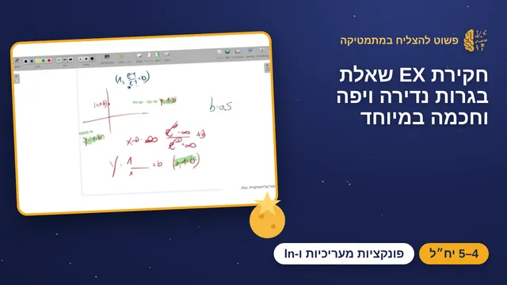
חקירת EX שאלת בגרות נדירה ויפה וחכמה במיוחד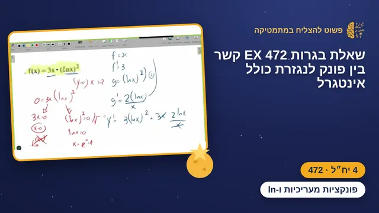
שאלת בגרות 472 EX קשר בין פונק לנגזרת כולל אינטגרל חקירת EX שאלת בגרות מדהימה וטובה 472
חקירת EX שאלת בגרות מדהימה וטובה 472 חקירה של EX 4 5 תרגיל מתוק מאוד
חקירה של EX 4 5 תרגיל מתוק מאוד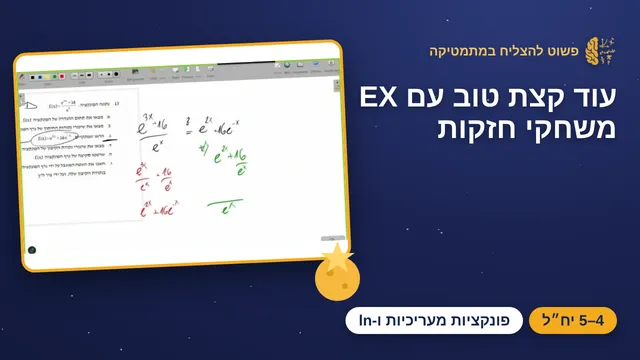
עוד קצת טוב עם EX משחקי חזקות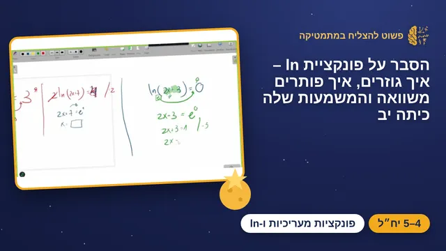
הסבר על פונקציית ln – איך גוזרים, איך פותרים משוואה והמשמעות שלה כיתה יב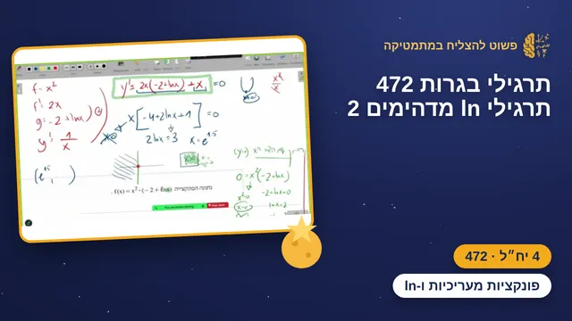
תרגילי בגרות 472 תרגילי ln מדהימים 2 תרגילי בגרות 472 תרגילי ln מדהימים 1
תרגילי בגרות 472 תרגילי ln מדהימים 1 שאלת בגרות EX – לפתור שאלת בגרות אחרי 10 דקות של למידה 4 יחאיך פותרים משוואת EX 4 5 יח כיתה יב
שאלת בגרות EX – לפתור שאלת בגרות אחרי 10 דקות של למידה 4 יחאיך פותרים משוואת EX 4 5 יח כיתה יב פונקציית ln שאלת בגרות 482
פונקציית ln שאלת בגרות 482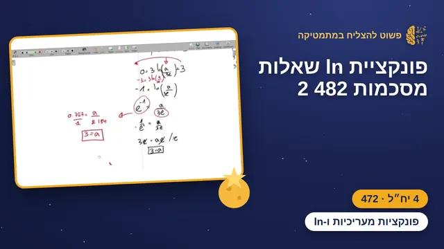
פונקציית ln שאלות מסכמות 482 2 פונקציית ln שאלות מסכמות 482 1
פונקציית ln שאלות מסכמות 482 1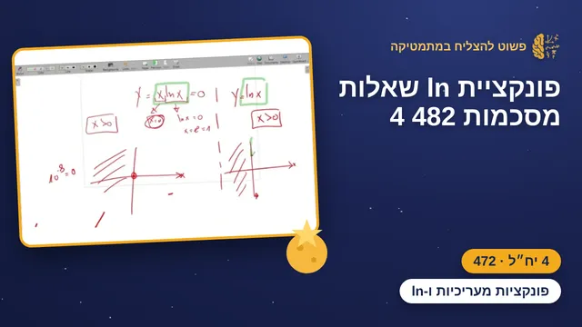
פונקציית ln שאלות מסכמות 482 4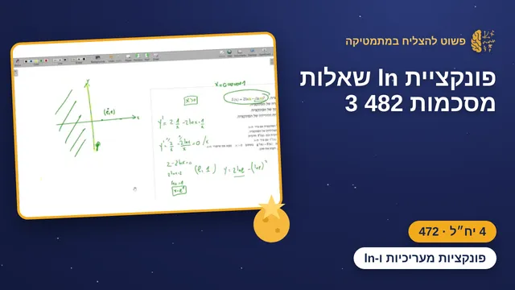
פונקציית ln שאלות מסכמות 482 3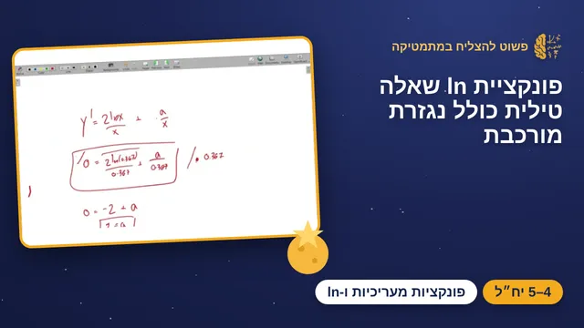
פונקציית ln שאלה טילית כולל נגזרת מורכבת פונקציית ln תרגיל טיל עם משיק 482
פונקציית ln תרגיל טיל עם משיק 482 חקירה מלאה פונקציית ln שאלת בגרות 805 482
חקירה מלאה פונקציית ln שאלת בגרות 805 482 חקירה מלאה פונקציית ln
חקירה מלאה פונקציית ln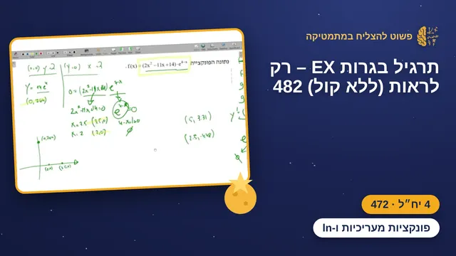
תרגיל בגרות EX – רק לראות (ללא קול) 482 פתירת משוואה ב-ln
פתירת משוואה ב-ln פתירת משוואות פונקציית ln 805
פתירת משוואות פונקציית ln 805 איך גוזרים ln פשוט וקלפונקציית ln – תחום הגדרה פשוט וקל
איך גוזרים ln פשוט וקלפונקציית ln – תחום הגדרה פשוט וקל שאלת בגרות EX כולל סעיף חכם ומשחק עם חזקות 4 יח 482
שאלת בגרות EX כולל סעיף חכם ומשחק עם חזקות 4 יח 482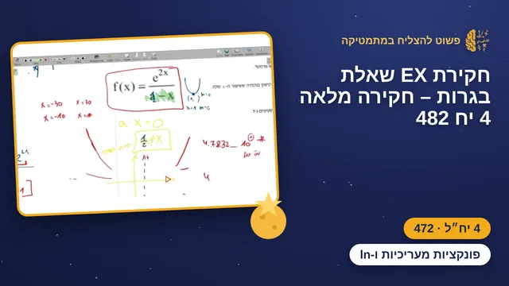
חקירת EX שאלת בגרות – חקירה מלאה 4 יח 482 איך פותרים משוואת EX – שאלה קשה שאלון 482 4 יח יב
איך פותרים משוואת EX – שאלה קשה שאלון 482 4 יח יב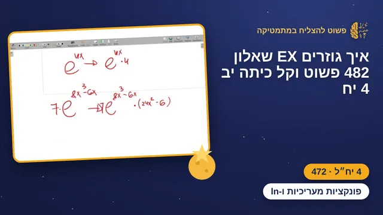
איך גוזרים EX שאלון 482 פשוט וקל כיתה יב 4 יח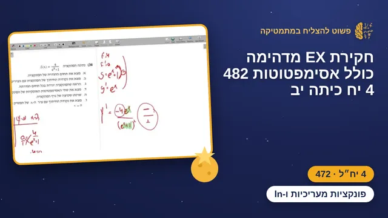
חקירת EX מדהימה כולל אסימפטוטות 482 4 יח כיתה יב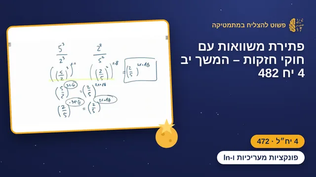
פתירת משוואות עם חוקי חזקות – המשך יב 4 יח 482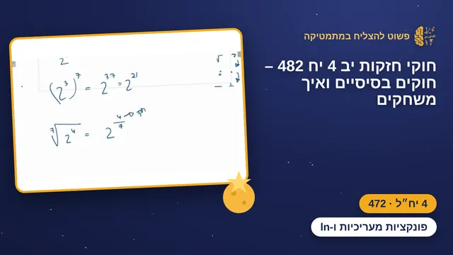
חוקי חזקות יב 4 יח 482 – חוקים בסיסיים ואיך משחקים חורף 2021 שאלת בגרות EX עם כללי הצלחה לכל שאלה יב 4 יח 482 805
חורף 2021 שאלת בגרות EX עם כללי הצלחה לכל שאלה יב 4 יח 482 805 482-805 EX – איך פותרים משוואה, חוקי הפונקציה ואיך גוזרים (הבסיס)
482-805 EX – איך פותרים משוואה, חוקי הפונקציה ואיך גוזרים (הבסיס) חקירת EX שאלה קשה מאוד 4 יח כיתה יב 482
חקירת EX שאלה קשה מאוד 4 יח כיתה יב 482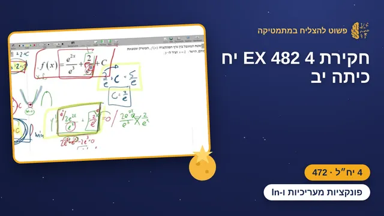
חקירת EX 482 4 יח כיתה יב חקירת ln 482 שאלה איכותית
חקירת ln 482 שאלה איכותית חקירת ln 482 4 יח כיתה יבחקירת ln 482 שאלה טילית
חקירת ln 482 4 יח כיתה יבחקירת ln 482 שאלה טילית חקירת EX איכותית כולל הסבר המהות
חקירת EX איכותית כולל הסבר המהות חקירת EX שאלת בגרות 4 יח 482 1חקירת EX שאלת בגרות 4 יח 482 2פונקציה מעריכית – שאלה ברמת בגרות 482 4 יחפונקציות מעריכיות שאלות בגרות 482 805 4 יח 2
חקירת EX שאלת בגרות 4 יח 482 1חקירת EX שאלת בגרות 4 יח 482 2פונקציה מעריכית – שאלה ברמת בגרות 482 4 יחפונקציות מעריכיות שאלות בגרות 482 805 4 יח 2 פונקציות מעריכיות שאלות בגרות 482 805 4 יח 1
פונקציות מעריכיות שאלות בגרות 482 805 4 יח 1 חקירה לוגריתמית ln – שאלה ברמת בגרות 482 4 יחחקירת EX עם שטחים וסעיפים חכמים – 2 שאלות בגרות 482
חקירה לוגריתמית ln – שאלה ברמת בגרות 482 4 יחחקירת EX עם שטחים וסעיפים חכמים – 2 שאלות בגרות 482 חורף 2023 שאלה 5 – חקירת ln 482
חורף 2023 שאלה 5 – חקירת ln 482 הסבר EX – כל החומר
הסבר EX – כל החומר קיץ 2022 מועד ב – חקירת EX שאלה 4 482
קיץ 2022 מועד ב – חקירת EX שאלה 4 482 קיץ 2022 מועד א – חקירת EX שאלה 4 482חקירת EX 482 – שאלה ברמה גבוהה עם סעיפים חכמיםחקירת ln עם סעיפים חכמים – שאלה ברמה גבוהה 482
קיץ 2022 מועד א – חקירת EX שאלה 4 482חקירת EX 482 – שאלה ברמה גבוהה עם סעיפים חכמיםחקירת ln עם סעיפים חכמים – שאלה ברמה גבוהה 482 קיץ 2023 מועד ב שאלה 5 – חקירת ln 482
קיץ 2023 מועד ב שאלה 5 – חקירת ln 482 חורף 2023 שאלה 5 – חקירת ln 482 שאלת בגרותקיץ 2020 מועד א – חקירת EX 482
חורף 2023 שאלה 5 – חקירת ln 482 שאלת בגרותקיץ 2020 מועד א – חקירת EX 482 קיץ 2021 מועד מיוחד – שאלה 4 EX 482קיץ 2021 מועד מיוחד – שאלה 5 חקירת ln 482ln – פתרון שאלות בגרות
קיץ 2021 מועד מיוחד – שאלה 4 EX 482קיץ 2021 מועד מיוחד – שאלה 5 חקירת ln 482ln – פתרון שאלות בגרותפונקציות מעריכיות ו-ln – שאלון 572 כל הנושאים של שאלון 572 ←
 פתרון בחינת בגרות 35582 חורף 2022 – חקירת ln וזיהוי גרפיםאינטגרל של פונקציה מעריכית – מציאת f ושטחאינטגרל של eˣ – פונקציה קדומה של e בחזקת ביטויפונקציית ln – תחום הגדרה, משוואות וחוקי לוגריתמיםf(x)=eˣ ו-g(x)=e⁻²ˣ⁺³ – נקודת חיתוך, משיק ושטחחקירת הפונקציה f(x)=x³·eˣמשוואות עם eˣ – גורם משותף והצבהמשוואות עם eˣ – הצבה t=eˣ ומשוואה ריבועיתחקירת fx=ax∕ln x−a עם פרמטר + g=1∕fחקירת fx=x+lnx²−8 – תחום, אסימפטוטות וקיצוןהמספר e ולוגריתם – לפתור משוואה מעריכיתגזירת eˣ – פונקציה מורכבת ומכפלהחקירת EX שאלת בגרות נדירה ויפה וחכמה במיוחדחקירה של EX 4 5 תרגיל מתוק מאודעוד קצת טוב עם EX משחקי חזקותהסבר על פונקציית ln – איך גוזרים, איך פותרים משוואה והמשמעות שלה כיתה יבאיך פותרים משוואת EX 4 5 יח כיתה יבפונקציית ln שאלה טילית כולל נגזרת מורכבתחקירה מלאה פונקציית lnפתירת משוואה ב-lnאיך גוזרים ln פשוט וקלפונקציית ln – תחום הגדרה פשוט וקלחקירת EX איכותית כולל הסבר המהותהסבר EX – כל החומרln – פתרון שאלות בגרות
פתרון בחינת בגרות 35582 חורף 2022 – חקירת ln וזיהוי גרפיםאינטגרל של פונקציה מעריכית – מציאת f ושטחאינטגרל של eˣ – פונקציה קדומה של e בחזקת ביטויפונקציית ln – תחום הגדרה, משוואות וחוקי לוגריתמיםf(x)=eˣ ו-g(x)=e⁻²ˣ⁺³ – נקודת חיתוך, משיק ושטחחקירת הפונקציה f(x)=x³·eˣמשוואות עם eˣ – גורם משותף והצבהמשוואות עם eˣ – הצבה t=eˣ ומשוואה ריבועיתחקירת fx=ax∕ln x−a עם פרמטר + g=1∕fחקירת fx=x+lnx²−8 – תחום, אסימפטוטות וקיצוןהמספר e ולוגריתם – לפתור משוואה מעריכיתגזירת eˣ – פונקציה מורכבת ומכפלהחקירת EX שאלת בגרות נדירה ויפה וחכמה במיוחדחקירה של EX 4 5 תרגיל מתוק מאודעוד קצת טוב עם EX משחקי חזקותהסבר על פונקציית ln – איך גוזרים, איך פותרים משוואה והמשמעות שלה כיתה יבאיך פותרים משוואת EX 4 5 יח כיתה יבפונקציית ln שאלה טילית כולל נגזרת מורכבתחקירה מלאה פונקציית lnפתירת משוואה ב-lnאיך גוזרים ln פשוט וקלפונקציית ln – תחום הגדרה פשוט וקלחקירת EX איכותית כולל הסבר המהותהסבר EX – כל החומרln – פתרון שאלות בגרות